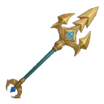
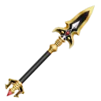
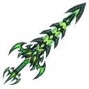
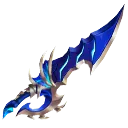

| Poseidon Trident 海王三叉戟  |
(DMG🗡️22 + CRI RATE🎯25%) 可發射「水泡」進行遠程攻擊。 |
| Zeus' Lighting 宙斯閃電 |
(DMG🗡️22) 每降低2%HP❤️，真傷 + 0.16。 |
| Sword of Hades 哈迪斯劍 |
(DMG🗡️22) 每4次命中，造成 Max HP*6% 的真傷，恢復HP❤️8%。 |
| Spear of Ares 阿瑞斯矛  |
(DMG🗡️22) 每3次命中，恢復 HP❤️5%，降低對手 3 DEF🛡️ 五秒。 |
| Apollo's Sun Sword 阿波羅日輪劍 |
(DMG🗡️22)(吸血🩸 +6%) 20%機率「暈眩」目標1秒。 |
| Fenrir's God-Killing Sword 芬尼爾弒神劍 |
(DMG🗡️22)(吸血🩸 +6%) 每4次命中，對周圍敵人造成 8🗡️ 傷害。 |
| Valkyrie's Divine Dual Blades 瓦爾基里雙刃 |
(DMG🗡️22)(吸血🩸 +8%) 35%機率觸發「連擊」。 |
| Jormungandr's White Snake Sword 耶夢加得白蛇劍 |
(DMG🗡️22) 每次命中，獲得真傷+1，持續4秒（最多8層）。 被攻擊時，36%機率減少1層。 |
| Mjollnir 雷神之槌 |
(DMG🗡️22) 每次攻擊獲得1層「靜電」，有25%機率「釋放」。 每釋放一層靜電，DMG🗡️+3，恢復 HP❤️（DMG🗡️ * 10% * 層數）。 |
| Helheim Sword 冥府劍  |
(DMG🗡️22) 每4次命中，竊取對手HP❤️（DEF🛡️的20%）與 DMG🗡️ * 6，持續1秒。 |
| Hermes's Scepter Sword 赫爾莫斯權杖劍 |
(DMG🗡️22) 每降低10%HP❤️，速度+1.5%。 35%機率「斬首」，造成目標 已損失HP * 20% 的傷害（最高25），恢復 HP❤️（該傷害 * 40%）。 |
| Flame Excalibur 火神劍 |
(DMG🗡️22) 每4次命中，將敵人捲入「火焰漩渦」。2秒內攻擊 1~3 次。每次攻擊造成 Max HP * 3% 的傷害，恢復等量HP❤️。 |
| Permafrost Sword 臻冰劍 |
(DMG🗡️22 + 吸血🩸6%) 每5次命中，對目標造成2秒「冰凍」（被冰凍期間無法移動，受擊造成 1~5點 的 additional damage 並解除）。 |
| Medusa's Spear 梅杜莎矛 |
(DMG🗡️22) 25%機率施加「中毒」狀態三秒（最多3層）。 中毒效果：目標所受治療效果減半；每層每秒竊取HP❤️（DMG🗡️ * 10%） |
| Rainbow Cat Sword 彩虹貓劍 |
(DMG🗡️22 + 吸血🩸6%) 每次命中，獲得 DMG🗡️+2 四秒（最多6層）。被攻擊時，30%機率減少1層。 |
| Sin of Pride Sword 傲慢劍 |
(DMG🗡️22) 每次命中，獲得 DMG🗡️+2.5 四秒（最多7層）。 當 DMG🗡️≥40，吸血🩸+12%。 |
| Sin of Envy Blade 嫉妒劍  |
(DMG🗡️22) 近戰攻擊造成 Max HP 3% 的 additional damage。 如果目標HP❤️ > 自身，恢復自身 HP❤️4%。 |
| Sin of Gluttony Blade 暴食劍 |
(DMG🗡️22) 受到近戰或技能傷害時，獲得吸血🩸+8%（最多6層）。 滿層時重置，對周圍敵人造成 12🗡️ 的傷害，並獲得 真傷+3 兩秒。 |
| Sin of Wrath Demon Sword 憤怒劍 |
(DMG🗡️22 + 吸血🩸8% + 爆擊傷害 50%) 每次命中，獲得 CRI RATE🎯+ 12% 四秒（最多4層）。被攻擊時，36%機率減少1層。 |
| Sin of Greed Golden Scythe 貪婪之鐮 |
(DMG🗡️22) 攻擊有25%機率施加「貪婪慾望」兩秒（最多3層）。 效果：目標DMG🗡️降低15%，自身每秒消耗 HP❤️ 4%。 |
| Sin of Sloth Calamity Blade 怠惰劍 |
(DMG🗡️22 + 吸血🩸6%) 攻擊後得到「怠惰效果」兩秒。期間下次攻擊的傷害會乘以效果持續時間（倍率=1+秒數），並清除效果。 |